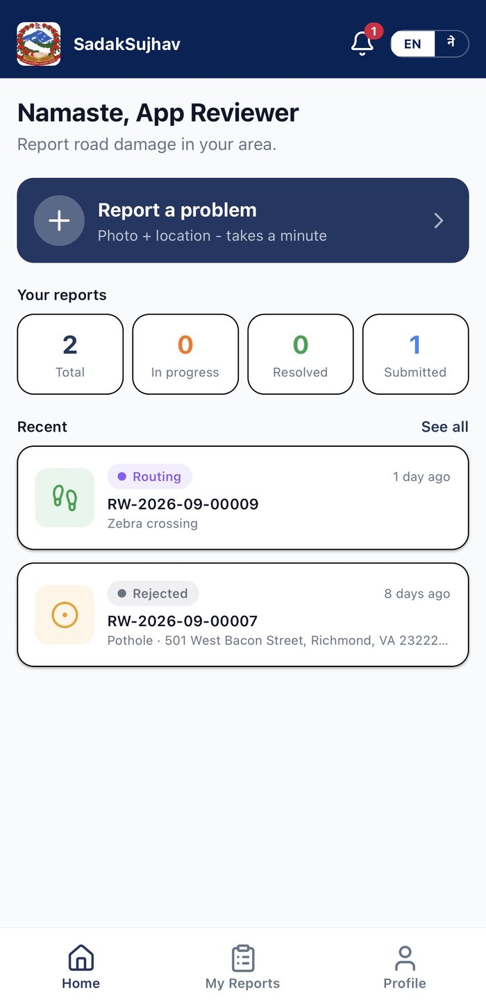
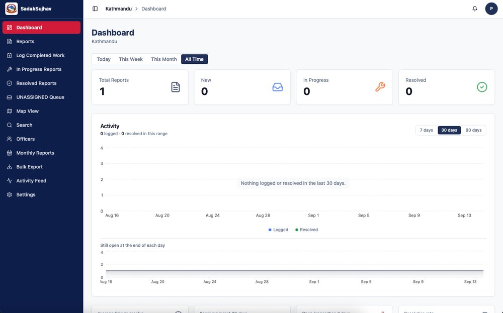

How Trasier Technology built Sadak Sujhav (सडक सुझाव), Nepal's first integrated road complaint and maintenance tracking platform.
A pothole, a broken streetlight, a blocked drain. Everyone sees them, but reporting one used to mean a phone call to the right office, on the right day, to the right person. Most reports never made it, and the ones that did vanished into a queue no citizen could see and no official could easily manage.
There was no shortage of people who cared, on either side. What was missing was the system connecting them: a channel for reports that couldn't get lost, and a way for municipal staff to see what was open, who owned it, and whether it actually got fixed.
A complaint app on its own isn't infrastructure, it's a suggestion box nobody checks. Trasier built Sadak Sujhav as two connected systems: a citizen-facing app that makes reporting effortless, and a municipal admin dashboard that makes acting on those reports manageable, with real-time geolocation tying every report to an exact place on the map.
Getting that right meant sitting with how the work actually happens: how a report needs to move from submitted, to assigned, to in progress, to resolved, and building the workflow around that reality instead of a generic ticketing template.
Capture the issue right where it is. A picture is the report.
GPS pins the exact spot automatically, so no one has to describe an address.
Pothole, drainage, streetlight, and more, so it reaches the right team.
One tap and it's filed: logged, located, and on its way to the right office.

After submitting, a citizen isn't left guessing. Real-time status updates move the report through submitted, acknowledged, in progress, and resolved, a visible history keeps a timeline of every step, and citizens are notified and can confirm once the issue is actually fixed.

Municipal staff get a full operational view: a dashboard of totals and status breakdowns, a live map of every report, an unassigned queue so nothing sits untouched, and officer assignment so accountability has a name attached to it.
A citizen no longer has to wonder if a report disappeared, they can watch it move. A municipal office no longer relies on memory and phone logs, they have a real system of record: who reported what, where, when, and who's responsible for fixing it. That's the difference between a suggestion box and infrastructure.
Sadak Sujhav is operational today, trusted by the Ministry of Infrastructure Development's Kathmandu Division, and it's the template Trasier is using to expand the same approach, real-time reporting, accountable workflows, and a system both sides actually use, to other parts of Nepal's public infrastructure.
Bring us your hardest problems. We'll tell you honestly what's buildable and how we'd approach it.